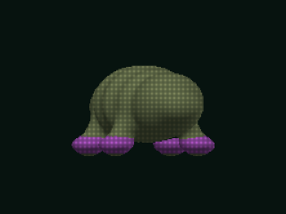
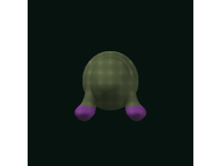
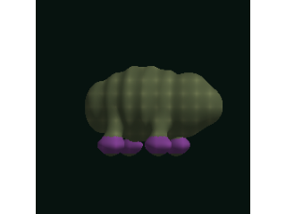
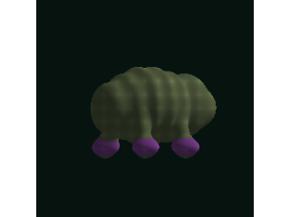

target-only
1 distinct view

pending
target-plus-front
2 distinct views

pending
target-plus-side
2 distinct views

pending
target-plus-side-plus-rear
3 distinct views

pending
fixed generator flux2-klein-9b · q4 · 512×512 · 8 steps · guidance 1.0 · carrier clay · seed 80401
prompt Every supplied reference image shows the same authored organism from a different camera. The first reference image is the authoritative target view: preserve its exact camera, outer silhouette, body proportions, support placement, and major mass distribution. Use later reference images only to resolve occluded three-dimensional structure belonging to that same organism. Complete one healthy, aesthetically pleasing living quadruped with coherent anatomical transitions, surface structure, material, and gentle character within the first view authored outline.
claim ceiling Experimental evidence for target-view retention and supplemental-view structural contribution only. No authenticated Bowplan transfer, general multiview consistency, reconstructed geometry, or production admission claim.
1 distinct view

2 distinct views

2 distinct views

3 distinct views
